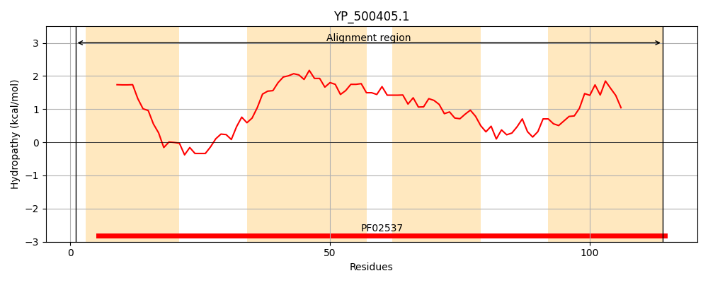
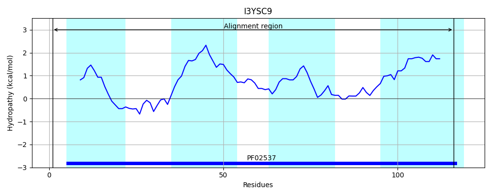
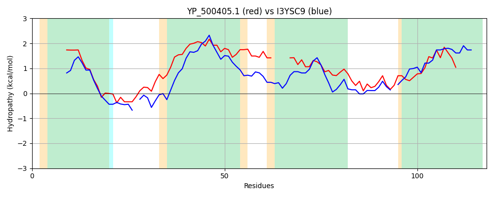

Hit Accession: I3YSC9
Hit TCID: 1.A.43.1.13
Hit Description: gnl|BL_ORD_ID|5313 gnl|TC-DB|I3YSC9|1.A.43.1.13 Putative fluoride ion transporter CrcB OS=Aequorivita sublithincola (strain DSM 14238 / LMG 21431 / ACAM 643 / 9-3) GN=crcB PE=3 SV=1
Mach Len: 118
e:0.000000
Query TMS Count : 4
Hit TMS Count: 4
TMS-Overlap Score: 3.700000
Predicted Substrates:CHEBI:17051;fluoride, CHEBI:41334;(R)-camphor
BLAST Alignment:
| Protein Hydropathy Plots: | |
|---|---|
|  |  |
Pairwise Alignment-Hydropathy Plot: | |
|  | |